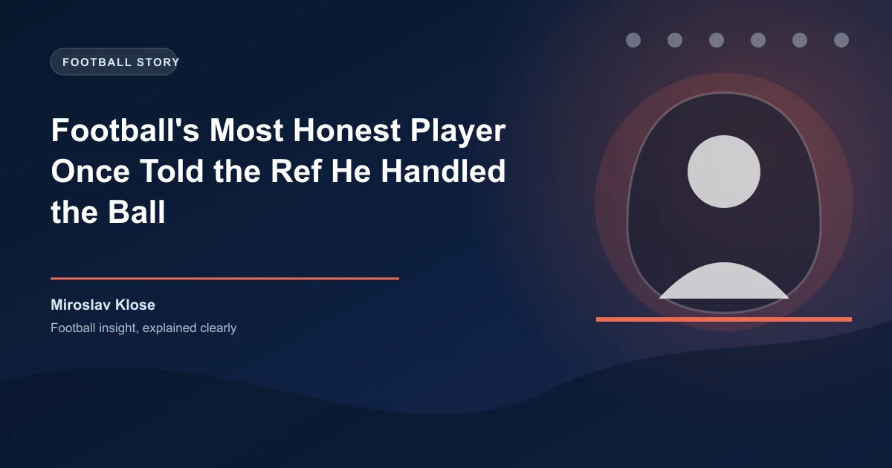

There is a specific kind of silence that falls over a stadium when something happens that nobody knows how to process. It happened at the Stadio Olimpico on December 15, 2012, when Miroslav Klose — a German striker playing for Lazio against Napoli — scored a goal, wheeled away for half a second, then stopped, turned, and walked straight to the referee to tell him he had handled the ball.
The referee, Paolo Tagliavento, had not seen it. The linesman had not flagged. Klose could have taken the goal. It would have been his sixth of the season. Instead, he walked through a cluster of protesting Napoli players, stood in front of Tagliavento, and said plainly: "It was a handball. The goal should not count."
Tagliavento shook his hand and disallowed the goal. Napoli went on to win 3-0 thanks to a second-half Edinson Cavani hat-trick. But nobody remembers the hat-trick. They remember the German who refused to cheat.
The incident happened in the 26th minute. A cross came into the Napoli box. Klose rose to meet it. The ball hit his hand before bouncing past Morgan De Sanctis. In real time it looked like a header. The replays showed otherwise. Klose knew immediately. He stood still for a few seconds, then walked toward Tagliavento without a word. De Sanctis ran past him still protesting, unaware Klose was already doing his job.
"I told the referee I had touched the ball with my hand," Klose explained afterwards. "He asked if I was sure. I said yes. Football should be fair."
Italian newspapers called him"Il Tedesco Onesto." Napoli fans gave him a standing ovation. Cavani embraced him at full-time.
What made this remarkable was that it was not an isolated moment. In 2005, playing for Werder Bremen against Arminia Bielefeld, Klose was fouled in the box and awarded a penalty. He told the referee the goalkeeper got the ball first. The referee reversed his decision. The match ended 1-1. Klose dropped two points because he refused to take a penalty he had not earned."The goalkeeper touched the ball," he said. "I could not take a penalty that was not a penalty."
| Stat | Value |
|---|---|
| World Cup Goals | 16 (all-time record) |
| World Cups Played | 2002, 2006, 2010, 2014 |
| World Cup Winner | 2014 (Germany) |
| Bundesliga Goals | 137 |
| Serie A Goals | 64 |
| Clubs | Kaiserslautern, Werder Bremen, Bayern Munich, Lazio |
Klose is not the only footballer to have done something like this. In 2000, Paolo Di Canio — not a man known for restraint — caught the ball instead of scoring into an open goal when Everton's goalkeeper went down injured. He won the FIFA Fair Play Award.
But Klose did it twice. First as a 27-year-old in his prime, then as a 34-year-old veteran in a new league chasing Champions League football. Both times he chose honesty over advantage, unprompted, in real time.
It is easy to forget, amidst the fair-play stories, that Miroslav Klose is the most prolific goalscorer in World Cup history. Sixteen goals across four tournaments. More than Ronaldo. More than Gerd M�ller. More than Pel�. He scored in every World Cup he played and won the whole thing in 2014 when Germany beat Argentina in the final at the Maracan�. He assisted the winning goal too — a perfectly weighted pass to Andr� Sch�rrle, whose cross found Mario G�tze. Klose was 36 years old. He came on as a substitute and changed the game with a pass, because that is who he was.
Klose retired with 71 goals for Germany (also a record) and a reputation as the cleanest player in top-level football. He never received a single red card in 837 professional appearances. Not one. Twenty-four years without ever being sent off.
Klose was awarded the German Fair Play Medal in 2012 for his actions against Napoli. The DFB called his behaviour"a shining example of sportsmanship." He remains one of the few players in football history applauded by both sets of fans for turning down a goal.
The reason this story still gets shared, more than a decade later, is that it highlights how far the game has drifted from its own ideals. In an era of simulation and gamesmanship, a professional footballer telling the referee he handled the ball feels almost subversive. Klose was not honest because he could afford to be — Lazio were chasing a top-four finish. He was honest because that was how he played. The World Cup record, the trophies, the standing ovations in opposition stadiums — those were the consequences, not the cause.
Cavani himself acknowledged it in his post-match interview: "What Klose did today was bigger than any goal I have ever scored."
Miroslav Klose is now 48 and working as a coach. He managed Rheindorf Altach in Austria and served as assistant to Hansi Flick with the German national team. But his legacy is not defined by his managerial record. It is defined by a moment in Rome when a German striker scored a goal with his hand and refused to let it stand. He did not wait for VAR. He did not weigh the odds. He walked through a wall of Napoli players to tell the truth. And that is why, fourteen years later, we are still talking about it.
Get free daily betting predictions for Serie A, Bundesliga, and every major league. WinFulltime helps you bet smarter.
Generate optimized accumulator combinations from today's AI-powered predictions. Set your target odds and get instant ticket suggestions.
Free Ticket Builder →